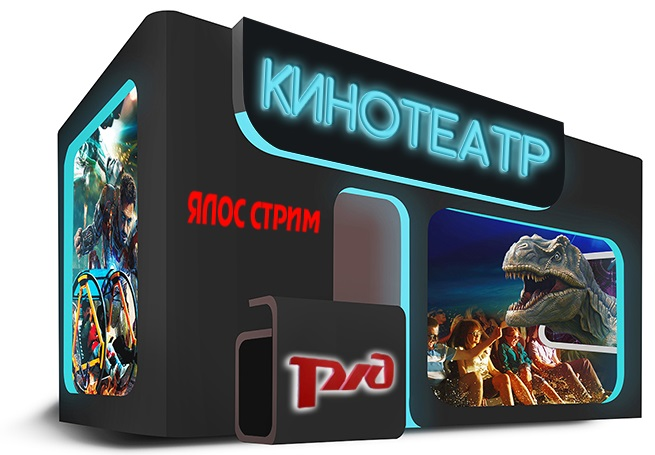
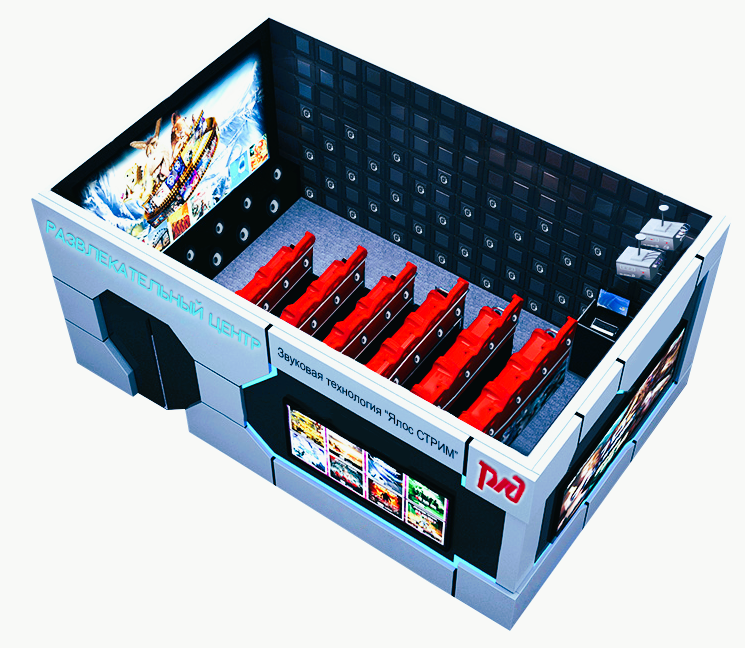
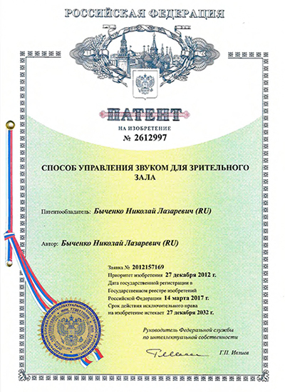
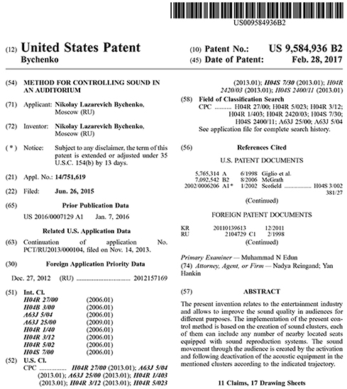
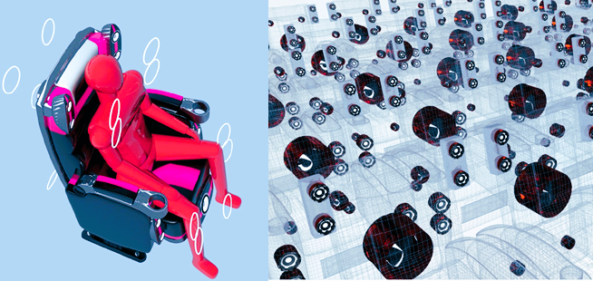
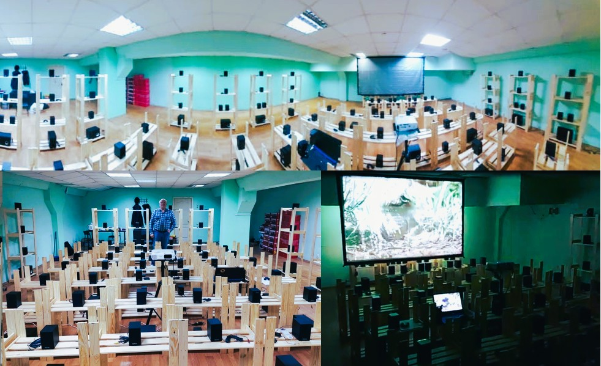

Технология коллективной, звуковой виртуальной реальности "Yalos Stream"
Новая прорывная технологию формирования и управления «близкими» звуками «Yalos Stream» превращения кинотеатра в аттракцион (тем самым повышая его посещаемость) Технология «Yalos Stream» https://yalos-project.com/предназначена для создания у зрителей эффекта «присутствия» в месте событий, происходящих на экране кинотеатров и концертных залах (коллективная звуковая виртуальная реальность).


В феврале 2017 года, компания получила патент № 9,584,936 "METHOD FOR CONTROLLING SOUND IN AN AUDITORIUM" в США на технологию управления звуком, а 14 марта 2017 года патент RU2612997 в России (информация опубликована в официальном бюллетене РОСПАТЕНТА №8-2017 от 11.03.2017-20.03.2017).
Ссылаясь на полученные патенты, с августа 2018 года специалистами компании начата разработка звукового процессора "Yalos Stream", предназначенного для кластерного воспроизведения "близких" звуков и управления их траекториями движения по всему зрительному залу.
27 декабря 2019 года наш стартап победил в всероссийском конкурсе программы СТАРТ-1, объявленного Фондом Содействия Инновациям, Договор 0057518, заявка №С1-66645, конкурс Старт-19-1 (4 очередь) Нам выделен грант на НИОКР по созданию ПРОТОТИПА №2, звукового процессора виртуальной реальности "Yalos Stream".


ВСТУПЛЕНИЕ В ПРОБЛЕМУ КОТОРУЮ РЕШАЕТ ПРОЕКТ:
Согласно исследованиям, проведенные компанией «DOLBY», все звуки в окружающем нас мире подразделяются на «верхние», «средние» и «близкие». Звуковые системы кинотеатров с помощью звуковых колонок, расположенных на стенах и потолке кинозалов, реалистично воспроизводят только «верхние» и «средние» звуки.
1) наиболее реалистично под углами, близкими к 90 градусам, зритель слышит «верхние звуки». Их излучают потолочные звуковые системы или аудиоколонки, установленные высоко на стенах кинотеатра.
2) «средние звуки» также реалистично воспроизводятся зрителями в кинотеатре. Однако, эти звуки излучаются уже под углом от 15 до 45 градусов, и для этих целей отлично подходят аудиоколонки, размещенные на боковых и торцевых стенах кинозалов.
ВНИМАНИЕ:
3) «Близкие звуки» не могут быть реалистично воспроизведены ни одной звуковой системой, так как они распространяются под углом 0 градусов (в горизонтальной плоскости к органам слуха зрителей) и должны воспроизводится рядом с зрителем на расстоянии 1-2 метра.
В кинотеатрах ввиду наличия акустических устройств на стенах и потолке, а не рядом с зрителем, «близкие звуки» реалистично, воспроизвести не возможно, т.е. эффекта «присутствия», как в реальном мире, достичь практически не возможно. Даже с такими современными многоканальными системами звука, как Dolby Atmos или IMAX, у зрителя никогда не будет ощущения полного присутствия на месте развития событий, которые демонстрируются на экране.
Звуковое окружение в кинотеатре будет наиболее реалистичным, только при условии, что оно будет похоже на окружающий мир человека. Зрители в кинотеатрах, смогут в полном объеме ощутить себя участниками происходящих событий на экране, только при наличии «близких звуков», то есть звуков, которые происходят в жизни рядом с людьми на расстоянии от 15 см до нескольких метров, в горизонтальной плоскости слышимости (шаги, шум дождя, ветер и т.д.).
«Близкие звуки» существенно (до 70%) влияют на ощущение реалистичности окружающих человека событий.


ТЕХНОЛОГИЯ «Yalos Stream» воспроизводит только "близкие звуки"
“Yalos Stream” подает «близкие звуки» зрителю в горизонтальной плоскости, через звуковые воспроизводящие устройства (динамики), встроенные в кресла кинотеатра.
Главная идея проекта –превращение любого кинотеатра в кино аттракцион, с наилучшим эффектом «присутствия» зрителя в событиях, которые демонстрируются на экране, (как в окружающем мире), тем самым увеличивая посещаемость кинотеатров и увеличивая стоимость просмотра.
Еще один существенный плюс технологии «Yalos Stream» состоит в том, что данная технология позволяет зрителю испытать коллективные эмоции, т.е. зрители в зале, получают захватывающие впечатления не только от нового вида звуковой реальности, но и от эмоций своих соседей. Подобный эффект сопоставим с эффектом участников аттракциона «американские» горки.
Эффект «присутствия», созданный новой технологией может быть использован не только в кино, но и при проведениях различных шоу, концертов и аттракционов в парках развлечений.
Система «YALOS STREAM» не конкурирует ни с одной существующей звуковой системой, она их удачно дополняет, создавая ощущение коллективного, погружения в события, происходящие на экране.
Стратегическая цель проекта – создание массовой, доступной и не дорогой, звуковой системы, коллективной виртуальной реальности, предоставляющей зрителям эффект «присутствия» при просмотре фильмов , концертов и шоу в виде дополнительной опции к уже существующему звуковому оборудованию.
Целевые клиенты - мировая киноиндустрия, концертные организации, парки развлечений, производители домашней электроники, автомобильная промышленность.
Целевая ниша проекта – залы для коллективного просмотра фильмов и концертов, бытовое (домашнее) применение, киноаттракционы в парках развлечений.
Ближайшая цель проекта – завершение стадии создания прототипа №2- Мини кинотеатр (успешно создан прототип №1, который подтвердил запатентованные характеристики технологии “Yalos Stream”).
Перспективы проекта - создание мобильного прототипа №3 для его демонстрации на мировых выставках инноваций и новых технологий (например выставка NAB в Лас-Вегасе, выставка AMF в Санта-Монике и т.д.) для нахождения стратегического партнера для совместной работе по внедрению технологии в мировую киноиндустрию.
Как дополнительный вариант, создание на безе мобильной версии прототипа №3, коммерческой версии Мини кинотеатра, использующего технологию коллективной виртуальной реальности "Yalos Stream", для использования в вокзальной сети железных дорог, в аэропортах, в небольших населенных пунктах, как школьного кинотеатра для системы образования.


Основные преимущества Yalos Stream
- Технология не использует звуковую дорожку фильма
- Окружает зрителя «близкими» звуками, создает эффект присутствия зрителя в месте событий на экране кинотеатра
- Вызывает коллективные эмоции зрителей при совместном просмотре фильмов в окружении «близких» звуков
- Воспроизводит только горизонтальные «близкие звуки» рядом с зрителем
- Не использует канальную запись звука
- Использует только динамики, размещенные в креслах зрительного зала
- Может управлять движением звуков по любым направлениям в зале
- Может воспроизводить звуки в любом количестве динамиков
- Звуки воспроизводит в виде звуковых кластеров любого размера
- Позволяет создавать различные звуковые сценарии для одного и того же фильма
- Позволяет создавать звуковые сценарии для старых фильмов
- Небольшая стоимость до 35 тыс. долларов на кинотеатр 300-500 мест
- Имеет варианты установки динамиков, без замены кресел в зрительном зале
- Имеет разные комплектации от «Эконом» до «VIP»
- Технология защищена патентами в США и России
- Не конкурирует ни с одной звуковой системой, установленной в кинотеатрах, это их опция
- Быстрая адаптация к любому кинотеатру, не требует звуковой настройки.
Стадии проекта
В феврале 2019 года изготовлен прототип №1, подтверждающий запатентованные характеристики технологии “Yalos Stream” по формированию и управлению движением звуковых кластеров «близких звуков».
В состав прототипа №1 входит звуковой процессор, звуковая матрица и программное обеспечение.
При начале работ над прототипом №2 (мини кинотеатр) были протестированы аналоги звуковых динамиков, которые могут быть установлены в креслах кинотеатра. Тест показал отличные результаты. В видеоклипе, можно наглядно увидеть движение нескольких звуковых кластеров, разных размеров, перемещающихся по заданным траекториям.
В декабре 2020 года создана работающая модель звуковой матрицы имитирущая кинотеатр и новая версия звукового процессора "Yalos Stream" 2.0